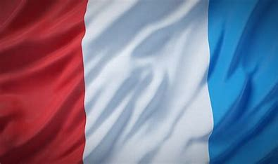

Study in France
Welcome to France! This is a guide to help you get accomodate to France and give you all the tips you might need during your stay.
France is known for its rich culture, history, and distinct educational system. Studying here offers a unique opportunity to experience a new way of life while pursuing academic growth. Below are important aspects of French life and culture that will help you navigate your time as a student in France.
Credits equivalence
Credits equivalence between schools in France and the USA can be a crucial aspect for students planning to study abroad. In France, the European Credit Transfer and Accumulation System (ECTS) is commonly used, where one academic year typically equals 60 ECTS credits. In contrast, the USA uses a credit hour system, where one academic year usually equals around 30 credit hours. To facilitate the transition, many universities have established equivalence agreements, allowing students to transfer credits seamlessly. For instance, 1 ECTS credit is generally considered equivalent to 0.5 to 0.75 US credit hours. Understanding these equivalences can help students plan their studies and ensure they meet the necessary academic requirements in both countries.
1 US credits = 1,5 / 2 ECTS
Campus Life and Social Opportunities
While social activities are not as integrated into the university experience as they are in American colleges, French universities still offer clubs and student organizations, though they may be less prominent. However, life in France is centered more around the cities themselves than the campuses. Taking part in local events, festivals, and exploring the cultural landscape is a significant part of the experience.
What to expect:
- Student life may revolve more around the city and less around campus activities.
- Join student associations ("associations étudiantes") to meet fellow students.
- Explore local cafes, museums, and cultural events in your free time.
Health and Wellness in France
The French healthcare system is highly regarded, and as a student, you’ll likely have access to it through student health insurance. You may need to register with a local doctor or healthcare provider. Make sure to bring any necessary health documents and understand how to access healthcare services during your stay.
Health tips:
- Ensure you have the proper health insurance for your stay, which can often be provided by your university.
- Familiarize yourself with the French healthcare system and register with a general practitioner if needed.
- Take advantage of pharmacies ("pharmacies") for minor medical needs.